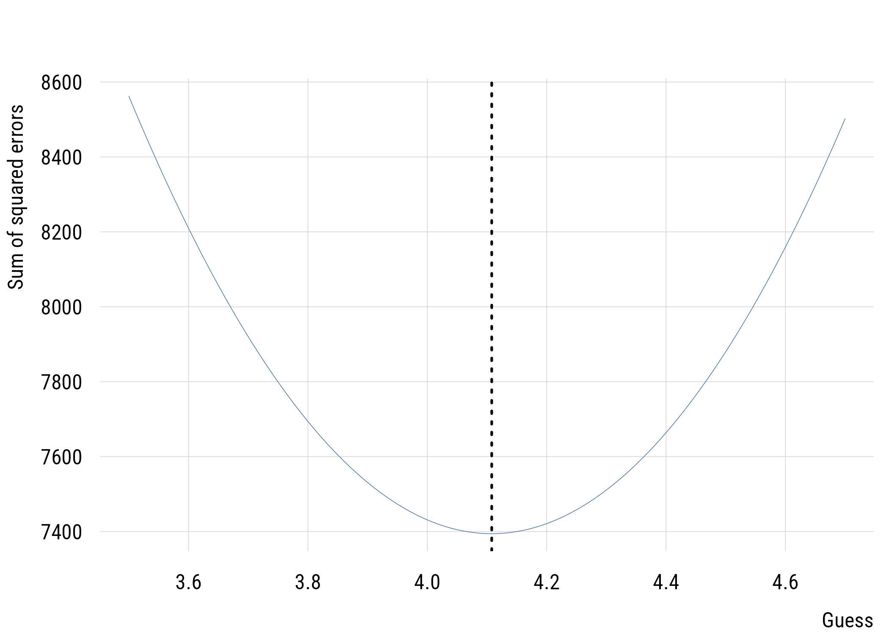
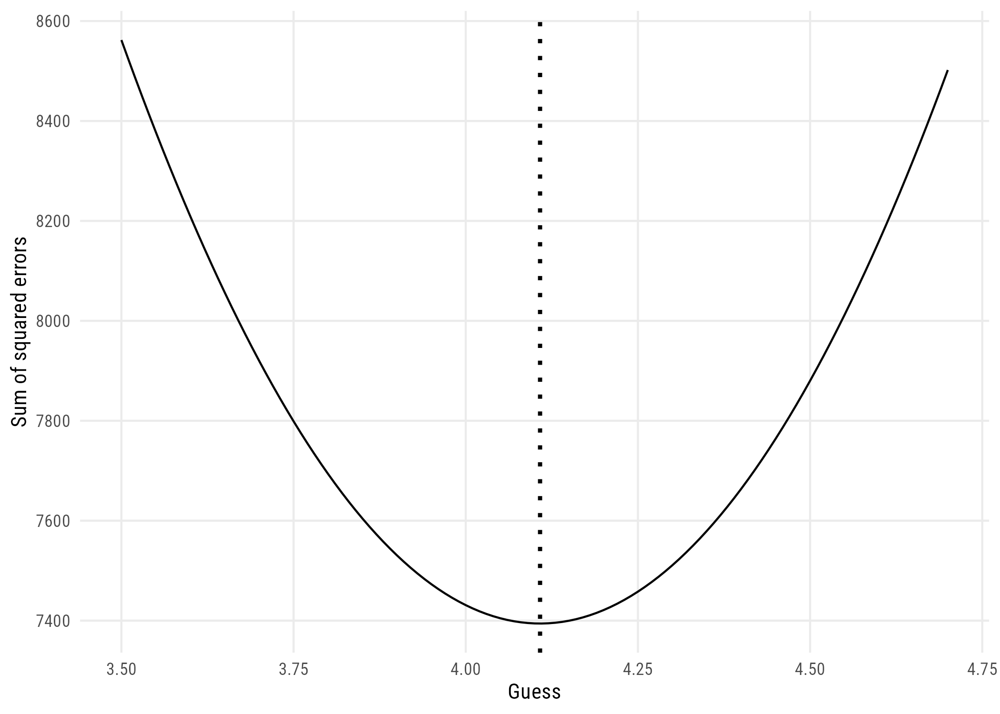

gss <- readRDS(here::here("data", "gss2024.rds")) |>
haven::zap_labels()4 Prediction and error
Everything from here to the end of the book is a variation on one activity. We propose a rule for predicting an outcome, we measure how badly the rule does, and we ask whether a more complicated rule does enough better to be worth having.
That lets us start with a model so simple it barely deserves the name and build up from there without ever changing the question we’re asking.
We use haven::zap_labels() to get rid of the labels that come from the Stata import that is the origin of the data in the gssr package. These can be useful sometimes, but they can also get in the way of certain functions.
4.1 A model is a description of a process
Let’s start with a single variable and no predictors at all. The GSS asks respondents to place themselves on a seven-point political spectrum, from 1 (extremely liberal) to 7 (extremely conservative).
pol <- gss |>
select(polviews, sex, wordsum, degree) |>
filter(!is.na(polviews))
nrow(pol)[1] 3160What generates these numbers? Here’s a first attempt, in words: there’s some typical position, and each person departs from it in their own way. Written down:
\[y_i = \mu + \epsilon_i\]
Read it as: person \(i\)’s answer is a common value \(\mu\), shared by everyone, plus a personal departure \(\epsilon_i\), which is that person’s weirdness. The subscript bookkeeping tells the story. \(\mu\) has no \(i\) because everyone gets the same one; \(\epsilon_i\) has one because each person is weird in their own particular way.
This is a data-generating process, a claim about how the numbers came to be. It’s obviously too simple. That’s what makes it a model.
ImportantError and residual are not the same thing
Error is the real thing in the world: \(\epsilon_i\), the part of a person our model doesn’t capture. It’s there whether or not we ever fit a model, and we never get to see it.
Residuals are our estimates of the errors, conditional on a particular model: \(e_i = y_i - \hat{y}_i\). Fit a different model and the residuals change. The errors don’t.
People use the two words interchangeably all the time, which quietly turns an unknowable feature of the world into a column in a data frame. When you read “error” in this book it means the real, unobserved quantity. When we mean the computed leftover, we’ll say residual.1
1 A fuller statement of the model adds a claim about the errors, usually \(\epsilon_i \sim \mathcal{N}(0, \sigma)\), so the weirdness is normally distributed and small departures are more common than big ones. Nothing in this chapter needs that assumption (sums of squared residuals and the comparisons we build from them are purely descriptive). Normality starts doing real work in Chapter 5, where it gives us the sampling distribution that licenses tests and intervals.
4.2 The simplest possible prediction
Suppose we have to guess one number for everyone. The scale runs 1 to 7, so 4 is the midpoint (“moderate”). That’s a real substantive claim: Americans are, on average, moderate.
pol <- pol |>
mutate(pred_c = 4,
resid_c = polviews - pred_c)
head(pol$resid_c, 10) [1] 0 -1 -3 0 -2 0 0 0 -2 -3Some residuals are positive, some negative. To measure how wrong we are overall we need to combine them, and just adding them up won’t do, since positives and negatives cancel and a wildly wrong model could total zero.
So we square them first and then add:
\[\text{SSE} = \sum_{i=1}^{n} (y_i - \hat{y}_i)^2\]
sse_c <- sum(pol$resid_c^2)
sse_c[1] 7431We’ll rely on the sum of squared errors (SSE) to quantify ERROR in this framework, at least for now.2 Squaring solves the cancellation problem, and it also means big misses count for disproportionately more. Being off by 4 is sixteen times as bad as being off by 1, not four times.
2 This is also sometimes called the sum of squared residuals (SSR) or the residual sum of squares (RSS). These are all the same quantities. Given the distinction we just drew, “sum of squared residuals” is really the more accurate name (it’s computed from residuals, not from errors), but SSE is what you’ll run into most often, so that’s what we’ll use.
4.3 A model that learns from the data
Our first model guessed 4 because the scale said so. It never looked at the data. The obvious improvement is to estimate the typical value instead.
pol <- pol |>
mutate(pred_a = mean(polviews),
resid_a = polviews - pred_a)
sse_a <- sum(pol$resid_a^2)
c(sse_c = sse_c, sse_a = sse_a) sse_c sse_a
7431.000 7394.202 The sample mean is 4.108, close to 4, which is why the improvement is slight. But it is an improvement.
The mean is the value that minimizes SSE. No other single guess does better. We can see it directly by trying a bunch of candidates:
candidates <- seq(3.5, 4.7, by = 0.01)
sse_for <- map_dbl(candidates, \(g) sum((pol$polviews - g)^2))plt(sse_for ~ candidates, type = "l",
xlab = "Guess", ylab = "Sum of squared errors")
abline(v = mean(pol$polviews), lty = 3, lwd = 2)
ggplot(data.frame(candidates, sse_for), aes(x = candidates, y = sse_for)) +
geom_line() +
geom_vline(xintercept = mean(pol$polviews), linetype = "dotted", linewidth = 1) +
labs(x = "Guess", y = "Sum of squared errors")
A smooth bowl with its bottom at the mean. Fitting a model means choosing parameter values that make the SSE as small as possible. Later on the bowl will live in more dimensions, but it’s the same bowl.
4.4 Comparing two models
Now we have two models and their SSEs. The natural question is how much the second one buys us.
Raw SSE is awkward for that, because its size depends on the units and on how many people we have. A proportion travels better:
\[\text{PRE} = \frac{\text{SSE}_{\text{C}} - \text{SSE}_{\text{A}}}{\text{SSE}_{\text{C}}}\]
This is the proportional reduction in error: of the error the simpler model made, what fraction did the more complex model get rid of?
The vocabulary here (the compact model C, the augmented model A, and PRE as the currency of comparison) follows Correll and colleagues (Correll et al. 2025). Comparing models is a much older idea than any particular textbook; what we’re borrowing is their terminology.
pre <- (sse_c - sse_a) / sse_c
pre[1] 0.004951929About 0.5%. Estimating the mean rather than assuming 4 gets rid of half a percent of the error.
This isn’t a lot, but it’s not nothing, either. It doesn’t mean the calculation failed. It means the substantive claim behind model C (that Americans average out to the midpoint of the scale) was very nearly right to begin with, so there wasn’t much for model A to improve on. A small PRE can be a fact about the world instead of a defect in the model.
4.4.1 A second look, with countries
The same logic works on data that has nothing to do with surveys, and it works even when the predictions aren’t estimated from the data at all.
Here’s the share of each country’s population using the internet in 2021, from the World Bank’s development indicators.
internet <- readRDS(here::here("data", "WDI.rds")) |>
filter(region != "Aggregates") |>
select(country, iso = iso3c, intpct = IT.NET.USER.ZS, income) |>
tidyr::drop_na()
nrow(internet)[1] 180Suppose we just guess that 70% of people are online in every country, a number I picked by eye rather than calculating. Then suppose we make a conditional guess instead: 90% in high-income countries, 70% everywhere else.
internet <- internet |>
mutate(high_income = income == "High income",
guess_flat = 70,
guess_cond = if_else(high_income, 90, 70))
c(flat = sum((internet$intpct - internet$guess_flat)^2),
conditional = sum((internet$intpct - internet$guess_cond)^2)) flat conditional
114666.11 89166.05 sse_flat <- sum((internet$intpct - internet$guess_flat)^2)
sse_cond <- sum((internet$intpct - internet$guess_cond)^2)
(sse_flat - sse_cond) / sse_flat[1] 0.2223853Conditioning on income gets rid of about 22% of the error, and neither number was estimated. We made both guesses up!
A model doesn’t have to be fitted to be a model. It has to make predictions, and those predictions can be judged. Fitting is just the business of choosing the predictions well. The reason our invented guesses did tolerably is that one of them happened to be close to the truth:
internet |>
group_by(high_income) |>
summarize(mean_intpct = mean(intpct), n = n())# A tibble: 2 x 3
high_income mean_intpct n
<lgl> <dbl> <int>
1 FALSE 57.3 117
2 TRUE 90.1 63A guess of 90 for high-income countries was nearly exact. A guess of 70 for the rest was too high by a wide margin, and that’s where most of the remaining error sits.
4.5 The same thing with lm()
Doing this by hand once is worth it. From here on we’ll let R fit the models.
The workhorse is lm(). We can get R to estimate model A, our one parameter “augmented” estimate, with the formula y ~ 1, which asks it to estimate an intercept and nothing else.
mod_a <- lm(polviews ~ 1, data = pol)
coef(mod_a)(Intercept)
4.107911 deviance(mod_a)[1] 7394.202deviance() pulls out the SSE, and it matches what we computed by hand. The estimated intercept is the sample mean, as it has to be.
Model C, our zero parameter guess, is stranger to express. First let’s make a version of polviews “centered” on 4, and then estimate a model with no constant at all (that is, estimating no parameters), written ~ 0:
mod_c <- lm(I(polviews - 4) ~ 0, data = pol)
deviance(mod_c)[1] 7431Same number as before. Because of the way we transformed the outcome variable (deviating it from 4), fitting ~ 1 to it instead would answer “how different is the estimated mean from 4.”
Now PRE from the fitted objects:
(deviance(mod_c) - deviance(mod_a)) / deviance(mod_c)[1] 0.0049519294.6 Predictions that depend on something
So far every model has made the same prediction for everyone. The interesting move is to let the prediction depend on what we know about a person.
In Chapter 3 we compared conditional probabilities across groups. This is the same operation with a continuous outcome: instead of one mean, a mean for each group.
Let’s take vocabulary scores and education. degree runs from 0 (less than high school) to 4 (graduate degree).
voc <- gss |>
filter(!is.na(wordsum), !is.na(degree))
voc |>
group_by(degree) |>
summarize(mean_wordsum = mean(wordsum), n = n())# A tibble: 5 x 3
degree mean_wordsum n
<dbl> <dbl> <int>
1 0 4.48 187
2 1 5.91 992
3 2 6.08 185
4 3 7.21 477
5 4 7.63 315A clear gradient. Now let’s compare two models: one that ignores education, and one that gives each degree category its own mean.
uncond <- lm(wordsum ~ 1, data = voc)
cond <- lm(wordsum ~ factor(degree), data = voc)
c(sse_uncond = deviance(uncond), sse_cond = deviance(cond))sse_uncond sse_cond
10711.473 8994.675 pre_cond <- (deviance(uncond) - deviance(cond)) / deviance(uncond)
pre_cond[1] 0.1602765Knowing someone’s degree gets rid of about 16% of the error we made by predicting the overall mean for everyone. Next to half a percent, that’s a lot.
TipPRE has another name you already know
Look at what the standard model summary reports:
| Unconditional | Conditional on degree | |
|---|---|---|
| (Intercept) | 6.340 | 4.481 |
| factor(degree)1 | 1.432 | |
| factor(degree)2 | 1.600 | |
| factor(degree)3 | 2.724 | |
| factor(degree)4 | 3.144 | |
| Num.Obs. | 2156 | 2156 |
| R2 | 0.000 | 0.160 |
| RMSE | 2.23 | 2.04 |
\(R^2\) for the conditional model is 0.16, exactly the PRE we just computed by hand.
When the compact model is the intercept-only model, PRE is \(R^2\). They’re two names for one number and you’ll meet both. PRE is the more general idea, since it applies to any pair of nested models; \(R^2\) is the name reserved for this particular comparison.
The model summary also reports RMSE, the root mean squared error, which is the square root of the mean squared error and so is roughly the size of a typical residual, back in the units of the outcome. It falls from 2.23 to 2.04 words. Both describe the same improvement: PRE as a proportion, RMSE in words correct.3
3 broom::glance() is another useful way to look at a model, and its sigma column is this same RMSE. Sigma is the RMSE!
4.7 Is the improvement worth it?
Here’s the problem that occupies the next several chapters.
Adding parameters to a model always reduces SSE, or at worst leaves it alone. It never increases it. Take twenty respondents, give each one their own parameter, and the SSE drops to exactly zero: a model that predicts the data perfectly and has learned nothing whatsoever about the world.
twenty <- voc |> slice_head(n = 20)
perfect <- lm(wordsum ~ factor(seq_len(20)), data = twenty)
round(deviance(perfect), 10)[1] 0So “the more complex model has lower SSE” isn’t evidence of anything. It’s guaranteed in advance. So how do we know if it’s “worth it” to adopt the more complex model? The real question is whether the reduction is bigger than we’d expect from adding parameters to pure noise, and answering that means knowing how much SSE reduction chance alone produces. That’s a question about sampling distributions.
Which is Chapter 5. We now have the machinery to state the problem properly.
4.8 Recap
- a model is a claim about how the data were generated; the simplest is \(y_i = \mu + \epsilon_i\), a common value plus each person’s own departure from it
- error is real and unobserved; residuals are our estimates of it, conditional on a model
- change the model and the residuals change, but the errors don’t
- SSE squares residuals before summing, so positives and negatives can’t cancel
- the mean minimizes SSE, and fitting a model means finding the parameter values at the bottom of that bowl
- PRE expresses one model’s improvement over another as a proportion of the simpler model’s error
- when the simpler model is intercept-only, PRE is \(R^2\)
- a small PRE may be a fact about the world rather than a failure of the model
- more parameters always reduce SSE, so a reduction by itself proves nothing